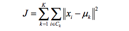
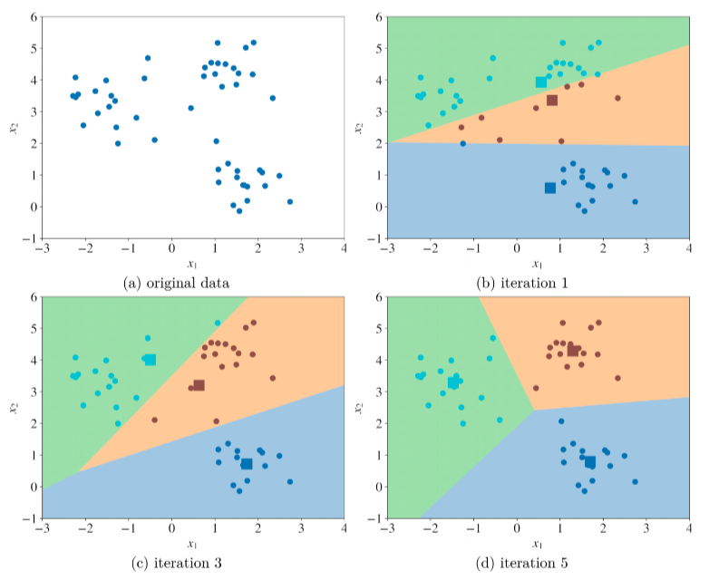
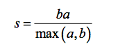
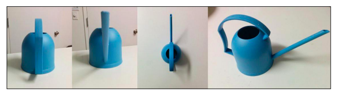
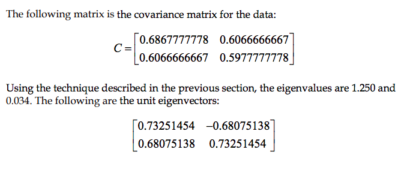
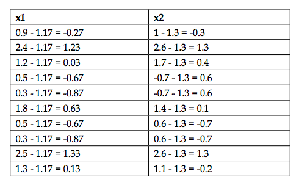
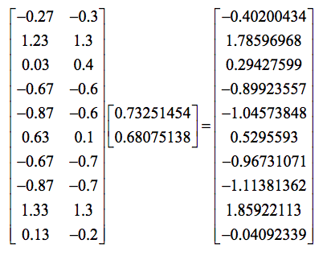

Machine Learning
k-Clustering and PCA
Clustering - Learn to assign labels
K-Clustering
:
-
Choose K - the number of clusters.
-
Randomly put k feature vectors, which is called centroids, to the feature space.
-
Compute the distance from each example x to each centroid c using some metric, like the Euclidean distance.

-
Assign the closest centroid to each example.
-
Calculate the average feature vector of the examples labeled with it for each centroid, and these average feature vectors are new locations of the centroids.
-
Recompute the distance from each example to each centroid, modify the assignment. Repeat the procedure until the assignments don’t change after the centroid locations were recomputed.
-
The initial position of centroids influence the final positions. The results of to runs can result in different models.

-
plots the value of the cost function produced by different K.
-
As K increases:
-
The average distortion will decrease.
-
Each cluster will have fewer constituent instances
-
the instances will be closer to their respective centroids.
-
the improvements to the average distortion will decline
-
The value of K at which the improvement to the distortion declines the most is called the elbow.
-
Measuring the distortion
-
the
silhouette coefficient

-
a measure of the compactness and separation of the clusters
-
increases as the quality of the clusters increase
-
large for compact clusters that are far from each other
-
small for large and overlapping clusters
Dimension Reduction
-
data visualization: humans can only interpret on a plot the maximum of three dimensions.
-
To build an interpretable model
PCA - Principal Component Analysis
-
Reduces a set of possibly-correlated, high-dimensional variables to a lower-dimensional set of linearly uncorrelated synthetic variables called principal components.
-
Reduces the dimensions of a data set by projecting the data onto a lower-dimensional subspace
-
Describing a 3D object in 2D:

-
Rationale: Eigenfunction and eigenvalues.
-
subtract the mean of each explanatory variable from each observation
-
calculate the principal components of the data, which are eigenvectors of the data's covariance matrix ordered by their eigenvalues


-
Project data onto the principal components
